Remote Medical Evacuation Pod
This project was completed as part of a four-member engineering design team. It focused on the design of a remote medical evacuation pod intended to support safer patient extraction and transport in wildfire environments where road-based evacuation is limited or impossible. The work presented on this page reflects the collective project outcome and is included for portfolio purposes.
Group Members
- Ramarumo Rapeta
- Modupi Mamabolo
- Satiate Magomane
- Nomfundo Mkhwanazi
1. Introduction
1.1 Background Information
Wildfires are a significantly increasing global threat to life. A comprehensive research report on wildfires shows that between the years of 2000 and 2023, globally, 309 wildfire tragedies were recorded, resulting in 14 360 injuries and 1 890 fatalities, with forest fires accounting for 80% of these statistics. The highest casualty tolls were recorded in Southern Europe, Northern America, and the Australia-New Zealand region [1].
Beyond the fire itself, an active wildfire’s physical surroundings pose additional risks. Wildfire smoke contains a complex harmful mixture of substances including carbon monoxide, nitrogen dioxide, ozone, particulate matter, polycyclic aromatic hydrocarbons, and volatile organic compounds, all of which directly impact public health and, more specifically, the victim at hand [2]. Hot, dry and windy weather conditions create fast-moving fires that are difficult to respond to or control in time, and exposure to these conditions can result in respiratory and cardiovascular disorders, severe burns, and, in the most serious cases, multi-organ failure [2].
Human life loss is known as the most fatal consequence of this environment, with entrapment being the most recurrent cause of death [3]. Analysis over a 30-year period from 1980 to 2010 of wildfire fatalities in Spain found that most victims suffered death due to late evacuation on foot or having an inconvenient mode of transport in closed-off areas such as forests or wildland-urban interface areas [3]. A similar pattern was recognised by an analysis of 144 civilian fatalities from forest fires in Greece between 1977 and 2013, where inadequate or delayed evacuation transport or inaccessibility was a critical factor for survival [4].
The persistence of this pattern across decades and multiple areas of study shows that existing evacuation approaches have not properly addressed the underlying problem. Road accessibility is a crucial structural barrier to effective wildfire evacuation. Poor road access and connectivity prevent evacuees and emergency services from responding effectively, which can lead to a significant increase in injuries and possible death [5].
The problem is made more difficult in places where there is no vehicle access at all, such as impenetrable forests or places where road infrastructure has been damaged by fire. Inadequate protection during the evacuation process itself can lead to patient deterioration beyond the original injury, since evacuated patients and survivors often arrive at emergency rooms with severe cardiovascular and pulmonary problems [2].
Increased remoteness has been found to be associated with an increase in death due to remote areas facing significant challenges in the provision of emergency trauma care. Large distances and delays in transferring patients to proper care remain a persistent issue and cause [6].
To provide medical care and transfer sick or injured people when road-based evacuation is not possible, medical helicopters are called upon to support wilderness search and rescue (SAR) operations [7]. Helicopter deployment, however, does not solve the ground-level issue. A rescue team must first walk to the casualty, administer first care, then move the patient to an appropriate helicopter landing or winching zone before they can be flown [7].
This foot-based carry phase, which is carried out over potentially large distances in active wildfire terrain while exposed to heat and smoke, represents a crucial gap in the current evacuation capability. Although evacuation gear is available for different rescue situations, there is no existing solution that simultaneously tackles the thermal, atmospheric, logistical, and mass limitations specific to foot-based wildfire patient extraction and interaction with helicopters.
1.2 Motivation
A severely injured victim being transported through active wildfire geography without thermal or respiratory protection is re-exposed to the same hazards that caused their injuries [2]. Every second of unprotected exposure worsens their condition. The aftereffects are not just discomfort; they can be the difference between a survivable injury and a fatal one, while also placing additional stress on already strained emergency healthcare systems.
Evacuation tools are available for various scenarios, including hospital fire evacuations, transporting contagious diseases, and urban search and rescue operations. However, none of these solutions were created for the concurrent mix of constraints found in foot-based wildfire rescue: manual transport by a small group across rugged terrain, high ambient temperatures, smoke and particulate intrusion, strict weight limits, and direct helicopter interface.
Existing solutions tackle some of these limitations, but none address all of them simultaneously. The high-risk circumstances that Rapid Extraction Module Support (REMS) teams must deal with are the driving force behind this design. Standard stretchers leave patients exposed to radiant heat and toxic particulate matter, as seen in Figure 1.
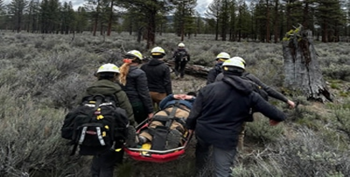
Figure 1: Existing field-tested medical extraction equipment in wildland fire environments (Source: Adventure Medics, 2026) [8]. Rescuers frequently use regular transport equipment when working in thick smoke and intense heat. As seen in Figure 1, despite the exceptional skill of these teams, existing stretchers do not offer a sealed, insulated, or cooling environment for the patient during evacuation.
1.3 Existing Solutions
Three current evacuation options were compared, and it was found that none sufficiently satisfies the requirements of the proposed pod. Although the ResQPod is lightweight at 2.2 kg, it is intended for use by only two rescuers and provides neither thermal nor atmospheric protection [9].
The SCAPEPOD Standard uses breathable fabric that offers limited protection from ash and smoke and can accommodate only one to three caregivers [10].
The EpiShuttle is the most sophisticated of the three solutions; however, it weighs 62 kg, exceeding the project's 40 kg mass limit, and is rated for temperatures up to only 40°C, which is below the required ambient temperature of 60°C [11].
These shortcomings demonstrate that no existing solution simultaneously satisfies all the requirements associated with foot-based wildfire patient evacuation. This gap supports the development of a purpose-built medical evacuation pod specifically designed for wildfire rescue operations.
Table 1: Comparative analysis between project requirements and existing solutions.
| Requirement | ResQPod | S-CAPEPOD Standard | EpiShuttle |
|---|---|---|---|
| Carry weight of up to 90 kg | 299 kg (Pass) | 150 kg (Pass) | 150 kg (Pass) |
| Pod weight < 40 kg | 2.2 kg (Pass) | 1.5 kg (Pass) | 62 kg (Fail) |
| Allow 20° vertical orientation from torso | Flat (Fail) | Flat (Fail) | Integrated bed (Pass) |
| Accommodate four rescuers carrying the pod | 2-person operation (Fail) | 1–3 caregivers (Fail) | Stretcher only (Fail) |
| Protection from heat (up to 60°C) | Plastic (Unverified / Fail) | Fire retardant fabric (Fail) | 0°C–40°C (Fail) |
| Atmospheric protection (smoke and ash) | None (Fail) | Breathable fabric (Fail) | Hard outer protection hood (Pass) |
1.4 Problem Statement
Existing medical evacuation equipment does not adequately satisfy the requirements of foot-based wildfire patient extraction. Current solutions fail to simultaneously provide thermal protection, atmospheric protection, ergonomic transport, low mass, and compatibility with helicopter rescue operations.
There is a critical need for a lightweight (< 40 kg) yet structurally robust medical evacuation pod capable of safeguarding a patient weighing up to 90 kg from environmental temperatures of up to 60°C and exposure to fine ash particles during manual transport over distances of up to 500 m from the rescue zone to a helicopter extraction point.
The proposed design must also accommodate both adult and paediatric patients, provide a torso incline of up to 20° to support respiratory comfort, and remain compatible with existing helicopter loading and rescue procedures.
2. Functional Decomposition Diagram
Supporting Functions
Auxiliary Functions
3. Design Considerations
3.1 Safety
Safety is the most critical design consideration, as the primary function of the pod is to protect and transport the patient to a safe environment. This factor strongly influences all other design parameters, including structural strength, load capacity, material selection, and compliance with medical safety standards.
To prevent further injury to the patient during evacuation, the pod must include an effective restraint system to minimise unwanted movement and stabilise the patient’s body under dynamic conditions such as carrying motion or uneven terrain.
In addition, maintaining adequate ventilation is essential to ensure the patient’s physiological stability during transport, particularly in high-temperature environments. Airflow must be sufficient to prevent overheating and maintain breathable internal conditions.
3.2 Ergonomics
The design must allow safe and efficient handling by four rescuers over a total evacuation distance of approximately 500 m under extreme environmental conditions.
Ergonomic considerations include optimised handle placement, balanced weight distribution, and posture-friendly carrying geometry to reduce physical strain on rescuers. The system must minimise awkward lifting angles and ensure coordinated load sharing between carriers.
For the patient, the internal layout must provide comfort, stability, and immobilisation while avoiding pressure points or restrictive positioning that could worsen injuries.
3.3 Weight
Weight is a critical factor because the pod must be manually carried by four rescuers over a significant distance. A lower overall mass reduces the tensile forces required at the handles and improves endurance during evacuation.
Reducing weight also improves safety by decreasing the likelihood of fatigue-related errors or loss of control, which could lead to dropping or destabilising the pod. However, weight reduction must not compromise structural integrity or thermal protection.
Therefore, material selection and structural optimisation must balance lightweight design with sufficient strength and durability.
3.4 Strength
The pod must be structurally strong enough to withstand all operational loads, including: tensile forces applied through the carrying handles, the static and dynamic load of the patient’s body, vibrations and shock loads during transport, and uneven ground conditions and potential impact loads.
Structural integrity must be maintained under all expected rescue scenarios. This requires careful consideration of load paths, stress distribution, and material behaviour at elevated temperatures. The structure must resist deformation to ensure patient safety and maintain alignment of internal support systems.
3.5 Operating Environment
The pod is designed for operation in extreme environmental conditions, with ambient temperatures reaching up to 60 °C, typical of wildfire scenarios. These conditions significantly affect material performance, including stiffness, strength, and long-term durability.
Thermal exposure also influences human factors, such as rescuer fatigue and grip performance, as well as system requirements for ventilation and insulation.
Furthermore, the pod must remain functional during transport over approximately 500 m toward patient loading and evacuation points such as helicopters. The design must therefore account for heat resistance, material degradation resistance, and sustained structural performance under prolonged exposure to high temperatures.
4. Global URS
4.1 Functional Requirements
- Must accommodate a patient mass range of 10 – 90 kg.
- The pod must allow torso elevation in the range of 0°–20° relative to horizontal.
- Must allow four rescuers to carry.
4.2 Environmental Constraints
- The pod must maintain structural integrity under a load of a patient of mass up to 90kg.
- Must withstand ambient temperatures between 30°C – 100°C.
- Must comply with applicable medical transport safety regulations.
4.3 Evaluation Criteria
- Mass
- Manufacturing cost
- Internal volume
5. Function Specific URSs
5.1 Shield
5.1.1 Functional Requirements
- Must enclose a patient with a body length range of 1.2 – 2.0 m.
- The enclosure material must maintain structural integrity under 30°C–100°C.
- Must allow full enclosure of the patient’s body in less than 20 seconds.
5.1.2 Environmental Constraints
- Must allow opening/closing within ≤ 10 seconds.
- Must be manufacturable within a cost of ≤ R10000.
- Must limit internal temperature rise to ≤ 5°C above ambient.
5.1.3 Evaluation Criteria
- Manufacturing costs
- Thermal protection performance
- Mass of enclosure
5.2 Torso Inclination
5.2.1 Functional Requirements
- Must allow torso inclination between 0 – 20°
- Angle tolerance of 1°
- The inclination system must be rigid when supporting
5.2.2 Environmental Constraints
- Must operate in range 20–90°C
- Must withstand load up to 2000 N
- Incline mechanism must be ≤ 5 kg
5.2.3 Evaluation Criteria
- Cost
- Angle adjustment duration
- Force required for adjustment
5.3 Structural Support
5.3.1 Functional Requirements
- Must support a load up to 160 kg, including equipment, patient, and safety factor
- Must maintain structural integrity at temperatures between 30–100°C
- Must distribute loads evenly across the frame
5.3.2 Environmental Constraints
- Limit structural deflection to ≤ 10 mm under maximum load
- Manufacturable within a cost of ≤ R4000
- Withstand a minimum load of 500 N without failure
5.3.3 Evaluation Criteria
- Manufacturing costs
- Support structure mass
- Max load capacity
5.4 Carrying
5.4.1 Functional Requirements
- Must allow 4 rescuers to carry simultaneously
- Each handle must withstand load up to 40 kg
- Must allow lifting and lowering within ≤ 10 seconds
5.4.2 Environmental Constraints
- Mass of the handling subsystem must be below 4 kg
- System must remain compatible with helicopter interface requirements
- Must withstand 20–100°C
5.4.3 Evaluation Criteria
- Handle mass
- Grip stability
- Manufacturing cost
5.5 Ventilation
5.5.1 Functional Requirements
- Must allow air exchange at a rate of 1 m/s sufficient for a single patient
- Ventilation openings must prevent particle entry larger than 1 mm
- Must maintain internal temperature of the pod within 10–25°C
5.5.2 Environmental Constraints
- Mass of each subsystem must be < 5 kg
- Must operate under 30–100°C temperature conditions
- Enable operations in under 60 seconds
5.5.3 Evaluation Criteria
- Airflow rate
- Resistance to ash blockade (pore sizes)
- Thermal regulation
5.6 Patient Restraining
5.6.1 Functional Requirements
- Must securely restrain a patient of mass up to 90 kg during transport
- Restrict patient movement to ≤ 50 mm in any direction during carrying
- Accommodate a patient torso inclination of up to 20°
5.6.2 Environmental Constraints
- Mass of the restraining belts must be ≤ 3 kg
- Materials must operate effectively within 20–100°C
- Belt material must be non-elastic
5.6.3 Evaluation Criteria
- Weight of the restraining system
- Manufacturing cost
- Release time
6. Generation of Concepts
6.1 Tables of Solutions
Concept generation was conducted for each major function identified during the functional decomposition process. Multiple solution principles were considered and evaluated against the project requirements before selecting the most suitable concept for further development.
Function: Shield the Patient from Heat
Baseline Solution: Insulated wall enclosure.
Table 2: Heat Protection Solutions
| Solution | How does it do it? | Fundamentally Different to Baseline Solution? | Valid Solution? |
|---|---|---|---|
| Double and insulated wall enclosure with air gap | The sandwich insulation and air gap between two layers reduce heat transfer into the pod. | Yes – it has an air gap between walls. | Yes |
| Heat-resistant fabric side cover | A fabric mounted around the pod slows down the heat reaching the pod. | Yes – it uses fabric instead of walls. | Yes |
| Sandwich panels | Two strong outer layers bonded to a thick hexagonal/coffin-shaped core. | Yes – composite material construction. | Yes |
Carrying
Function: Enable carrying of the evacuation pod by four rescuers.
Baseline Solution: Fixed side handles.
Table 3: Load Carrying Mechanisms
| Solution | How does it do it? | Fundamentally Different to Baseline Solution? | Valid Solution? |
|---|---|---|---|
| Shoulder carrying | Straps enable rescuers to carry the pod on their shoulders. | Yes – load point changes from hands to shoulders. | Yes |
| Rolling wheels | Small wheels roll forward while rescuers push rather than lift. | Yes – a rolling mechanism is used instead of lifting. | Yes |
| Long carrying poles | Long poles run along the length of the pod for rescuers to hold at the front and back. | Yes – force is applied through two parallel poles which rescuers hold. | Yes |
Torso Inclination
Function: Torso inclination.
Baseline Solution: Mechanical hinge (manual locking at specific angles).
Table 4: Solution generation for torso inclination
| Solution | How does it do it? | Fundamentally Different to Baseline Solution? | Valid Solution? |
|---|---|---|---|
| Gas strut mechanism | Uses compressed gas, e.g. nitrogen, to generate a force. | Yes – pneumatic mechanism | Yes |
| Screw driven mechanism adjustment | An endless height adjustment is possible using a lead screw that is rotated by a hand crank or motor. | Yes – mechanical work | Yes |
| Car recliner mechanism | Uses a pawl and gear to recline the seat by a knob. | Yes – unidirectional mechanical lock | Yes |
| Prismatic-revolute-revolute | To tilt and raise the platform, three active prismatic joints or sliders change the length and position of the legs. | Yes – multi-degree-of-freedom parallel linkage | Yes |
Structural Support
Function: Giving the pod stiffness and the ability to support weight.
Baseline Solution: Inflatable truss.
Table 5: Structural support solutions
| Solution | How does it do it? | Fundamentally Different to Baseline Solution? | Valid Solution? |
|---|---|---|---|
| Internal frame (space frame) | A rigid internal frame supports loads while covered by an external structure. | Yes – skeleton-based | Yes |
| External monocoque shell | Load acts on the outer skin, distributing stresses across the surface. | Yes – skin-based support | Yes |
| Longitudinal I-beam | Sturdy rails span the length of the pod to absorb bending stresses. | Yes – directional reinforcement | Yes |
6.2 Drawings of Concepts
6.2.1 Concept 1
The first concept consists of an aluminium frame connected to the torso support frame through a clevis joint. A car recliner mechanism is used to facilitate torso inclination adjustment, allowing the patient’s upper body to be positioned at various angles for improved comfort and respiratory support during evacuation.
A single mesh ventilation system is positioned above the patient’s head to allow airflow into the pod while simultaneously limiting the entry of ash, debris, and other airborne contaminants commonly present in wildfire environments.
The pod is enclosed using a transparent cover that allows rescuers to visually monitor the patient throughout transportation without requiring the enclosure to be opened. This improves patient observation while maintaining environmental protection.
Rubber sealing elements are incorporated around the enclosure interface to improve airtightness and reduce smoke ingress. The seals also assist in preventing unwanted movement or slippage of enclosure components during transport across uneven terrain.
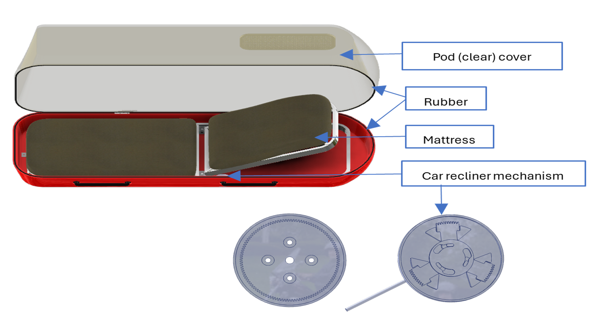
Figure 2: CAD drawing of Concept 1 showing the clear pod cover, rubber sealing interface, patient mattress, and car recliner mechanism used to provide torso inclination adjustment.
6.2.2 Concept 2
Concept 2 is a cylindrical single-shell evacuation pod featuring a curved composite outer enclosure and a transparent polycarbonate access panel integrated into the upper section of the shell. The opening and closing interfaces are sealed using a rubber gasket system to reduce the ingress of smoke, ash, and hot air during wildfire evacuation.
Internally, the pod uses aluminium I-beams positioned beneath the support bed to reinforce the lower structure and distribute patient loads along the base of the enclosure. The patient support section incorporates an EVA mattress and a manually adjustable backrest mechanism that locks into preset positions using a hinged mechanical locking system.
The cylindrical geometry improves structural stiffness and distributes external loads efficiently across the enclosure while minimising the number of internal structural members. This configuration provides a lightweight but structurally efficient solution capable of supporting patient transport in demanding wildfire rescue environments.
Figure 3: CAD model of Concept 2 showing the cylindrical enclosure, transparent access panel, integrated carrying handles, internal support structure, and patient support compartment.
6.2.3 Concept 3
Concept 3 is a hybrid evacuation pod consisting of a lightweight internal aluminium frame enclosed within insulated fibreglass sandwich-panel shells forming the upper cover and lower container. The enclosure incorporates a transparent polycarbonate viewing window, allowing rescuers to monitor the patient during transportation without opening the pod.
Rubber gasket seals are positioned between the upper and lower shell sections to reduce the ingress of smoke, ash, and heated air into the patient compartment. This provides an additional layer of environmental protection during wildfire evacuation operations.
The internal aluminium frame includes strategically placed perforations to reduce overall system mass while maintaining the structural integrity required to support patient and equipment loads. This approach improves weight efficiency without compromising strength.
Inside the pod, the patient is supported by an EVA-cushioned split mattress system incorporating an adjustable torso support section actuated through a gas strut mechanism. This enables controlled torso inclination and improved patient comfort during transport.
Ventilation is provided through filtered vents assisted by compact axial fans that promote internal air circulation, improve thermal comfort, and reduce the accumulation of smoke and particulate matter within the patient compartment during evacuation procedures.
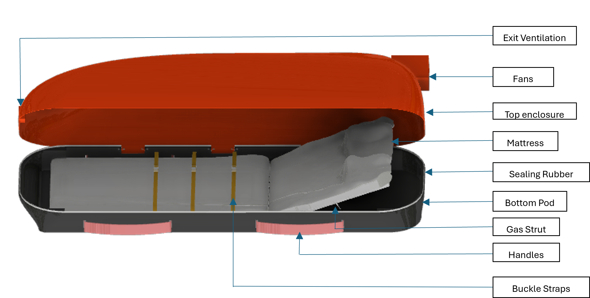
Figure 4: CAD model of Concept 3 showing the final configuration of the proposed remote medical evacuation pod.
7. Evaluation of Concepts
7.1 Criteria Selection and Justification
The generated concepts were evaluated against a set of criteria derived from the functional requirements, environmental constraints, and design objectives established earlier in the project. These criteria were selected to ensure that the final concept provides an appropriate balance between performance, safety, manufacturability, and operational effectiveness in a wildfire evacuation environment.
- A. Manufacturing Cost
- B. Mass
- C. Airflow Rate
- D. Stiffness
- E. Maximum Load Capacity
- F. Thermal Protection Performance
7.2 Evaluation
Table 6: Criteria Weighting Matrix
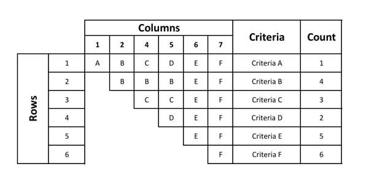
Table 6: Criteria weighting matrix used to determine the relative importance of each evaluation criterion during concept selection.
A vs B → B wins
Mass is more critical than manufacturing cost because the pod must be physically lifted and transported by four rescuers. A low-cost design is ineffective if it is too heavy to evacuate safely.
A vs C → C wins
Airflow rate is more important than manufacturing cost because oxygen supply and smoke removal directly influence patient survivability, whereas cost does not affect survival during evacuation.
A vs D → D wins
Structural stiffness is more important than manufacturing cost because excessive deformation during lifting or transport may compromise patient safety and structural integrity.
A vs E → E wins
Maximum load capacity is more important than manufacturing cost because structural failure during lifting or transport results in immediate system failure and patient danger.
A vs F → F wins
Thermal protection performance is more important than manufacturing cost because survival in wildfire conditions depends on adequate heat shielding. Cost becomes irrelevant if protection fails.
B vs C → B wins
Mass is more important than airflow rate because the pod must first be physically transportable. Without manageable mass, evacuation becomes impossible regardless of air supply quality.
B vs D → B wins
Mass is more important than structural stiffness because increasing stiffness often increases weight, whereas maintaining transportability for four rescuers is essential.
B vs E → E wins
Maximum load capacity is more important than mass because structural failure under lifting loads is catastrophic, whereas slight mass increases can still be tolerated.
B vs F → F wins
Thermal protection performance is more important than mass because survival in extreme heat conditions overrides transport-efficiency concerns.
C vs D → D wins
Structural stiffness is more important than airflow rate because excessive structural flexing can compromise the integrity and safety of the evacuation pod during handling and transport.
C vs E → E wins
Maximum load capacity is more important than airflow rate because structural failure during lifting or transport results in immediate system collapse.
C vs F → F wins
Thermal protection performance is more important than airflow rate because preventing heat injury is the primary survival constraint in wildfire environments.
D vs E → E wins
Maximum load capacity is more important than structural stiffness because the structure must first withstand the required loads before minimizing deformation becomes important.
D vs F → F wins
Thermal protection performance is more important than structural stiffness because maintaining survivable internal temperatures is more critical than minimizing structural deflection.
E vs F → F wins
Thermal protection performance is more important than maximum load capacity because even a structurally strong pod is ineffective if it cannot protect the patient from lethal heat exposure.
7.4 Weighted Decision Matrix
Table 7: Weighted Decision Matrix
| Criteria | Weight | Max Score | Concept 1 | Concept 2 | Concept 3 | |||
|---|---|---|---|---|---|---|---|---|
| A | 1 | 5 | 3 | 3 | 4 | 4 | 2 | 2 |
| B | 4 | 20 | 2 | 8 | 4 | 16 | 3 | 12 |
| C | 3 | 15 | 4 | 12 | 3 | 9 | 5 | 15 |
| D | 2 | 10 | 3 | 6 | 4 | 8 | 5 | 10 |
| E | 5 | 25 | 3 | 15 | 4 | 20 | 5 | 25 |
| F | 6 | 30 | 3 | 18 | 4 | 24 | 5 | 30 |
| Total | 105 | 62 | 81 | 94 | ||||
7.5 Score Justification
A. Manufacturing Cost (Weight: 1)
Concept 2 (Score: 4)
The cylindrical monocoque shell reduces the number of internal structural members and joints, lowering assembly complexity compared to frame-based systems. However, the curved geometry and moulding processes still require specialized manufacturing techniques.
Concept 1 (Score: 3)
The rigid shell and recliner system use relatively common fabrication processes and commercially available components, but the recliner mechanism introduces additional moving parts and assembly operations which increase manufacturing complexity.
Concept 3 (Score: 2)
The hybrid frame-shell system requires fabrication of both an internal aluminium frame and insulated sandwich-panel enclosure. The combination of multiple subsystems, perforated structural members, gas strut integration, and thermal sealing increases manufacturing time and production cost.
B. Mass (Weight: 4)
Concept 2 (Score: 4)
The cylindrical shell distributes loads efficiently through its geometry, reducing the need for excessive internal reinforcement. This allows a relatively lightweight structure while maintaining stiffness.
Concept 3 (Score: 3)
The perforated aluminium frame reduces structural mass while maintaining adequate strength. However, the dual-shell insulated enclosure increases total system weight compared to single-shell concepts.
Concept 1 (Score: 2)
The rigid shell, recliner mechanism, aluminium backrest structure, and additional adjustment components increase the total mass of the pod and handling effort during evacuation.
C. Airflow Rate (Weight: 3)
Concept 3 (Score: 5)
The design incorporates compact axial fans integrated into HEPA-filtered vents, producing controlled active airflow circulation throughout the enclosure. This improves ventilation effectiveness and reduces stagnant air regions.
Concept 1 (Score: 4)
The assisted ventilation system provides adequate airflow through filtered vents and supports occupant breathing comfort during evacuation.
Concept 2 (Score: 3)
The cylindrical enclosure primarily relies on passive airflow with limited assisted ventilation, resulting in lower airflow circulation compared to actively ventilated concepts.
D. Stiffness (Weight: 2)
Concept 3 (Score: 5)
The internal aluminium frame provides a dedicated structural load path independent of the enclosure. The frame-shell combination significantly improves bending resistance and structural rigidity under carrying loads.
Concept 2 (Score: 4)
The cylindrical shell geometry naturally distributes stresses efficiently and provides high global stiffness through curvature, although local deformation may still occur without a full internal frame.
Concept 1 (Score: 3)
The rigid shell structure provides acceptable stiffness, but the inclusion of large access openings and recliner mechanisms reduces overall structural rigidity compared to reinforced frame systems.
E. Maximum Load Capacity (Weight: 5)
Concept 3 (Score: 5)
The internal 6061-T6 aluminium frame is specifically designed to carry patient and handling loads independently of the enclosure, producing the highest structural load capacity and safest load transfer path.
Concept 2 (Score: 4)
The aluminium I-beam supports beneath the bed improve vertical load distribution and increase patient support strength, although the shell still carries part of the structural loading.
Concept 1 (Score: 3)
The recliner-based patient support system introduces additional movable joints and localized loading regions which reduce the overall load-carrying efficiency of the structure.
F. Thermal Protection Performance (Weight: 6)
Concept 3 (Score: 5)
The insulated fiberglass sandwich panels provide the highest resistance to heat transfer due to the low thermal conductivity of the layered composite structure and enclosed air-gap insulation system.
Concept 2 (Score: 4)
The enclosed cylindrical shell provides moderate thermal protection using composite enclosure materials and sealed interfaces, although it lacks dedicated sandwich insulation.
Concept 1 (Score: 3)
The rigid shell enclosure provides environmental isolation and filtered ventilation, but the absence of a dedicated insulated sandwich-panel system results in lower thermal resistance during wildfire exposure.
8. Detailed Design of Selected Concept
8.1 System-Level Layout
8.1.1 Assembly CAD View of the Solution
Figure 5: Assembly CAD view of final design. Concept Animation
8.1.2 Key Dimensions
Table 8: Pod Dimensions
| Component | Dimension |
|---|---|
| Overall Pod Length | 2200 mm |
| Overall Pod Width (Top Shell) | 800 mm |
| Overall Pod Width (Lower Shell) | 700 mm |
| Overall Pod Height | 400 mm |
| Bottom Shell Length (Outer) | 2200 mm |
| Bottom Shell Height | 160 mm |
| Bottom Shell Thickness | 22 mm |
| Top Cover Length | 2200 mm |
| Top Cover Width | 800 mm |
| Top Cover Height | 240 mm |
| Top Shell Thickness | 17 mm |
| Lower Body Frame Length | 1320 mm |
| Lower Body Frame Width | 652 mm |
| Cross Member Span | 572 mm |
| Torso Frame Length | 651 mm |
| Torso Frame Width | 572 mm |
| Frame Cross-Section | 40 mm × 40 mm SHS |
| Frame Wall Thickness | 3 mm |
| Vent Pores Diameter | 6 mm |
| Gas Strut Stroke | 100–150 mm |
| Handle Length | 300 mm |
| Handle Diameter | 30 mm |
| Viewing Window (Major Axis) | 350 mm |
| Viewing Window (Minor Axis) | 180 mm |
| Polycarbonate Window Thickness | 10 mm |
| Seal Thickness | 5–8 mm |
8.1.3 System Integration
The successful operation of the Wildfire Evacuation Pod relies on the seamless interaction of its subsystems. The integration ensures that structural, environmental, patient support, and handling systems function as a single coordinated unit under both static and dynamic evacuation conditions. The system has been designed so that load transfer paths, environmental sealing, and user accessibility are all mutually compatible and do not interfere with one another during operation.
Chassis Frame as the Structural Backbone
The 6061-T6 aluminium internal frame subsystem acts as the primary load-bearing structure of the pod. It provides the mechanical backbone to which all other subsystems are mounted. All loads generated by the patient, lifting operations, and handling forces are transferred into this frame.
- The longitudinal and cross-member configuration ensures bidirectional stiffness.
- The frame provides defined mounting points for:
- Environmental protection shell (FRP enclosure)
- Patient support platform
- Handle and load interface brackets
- Gas strut mounting points
- Load transfer occurs from the external shell → mounting interfaces → internal frame → handle points → rescuers/ground.
This ensures that no subsystem independently carries global structural loads, preventing localized failure.
Load Path Management
All applied forces during evacuation are channelled through clearly defined load paths:
- Vertical loads (patient weight + pod mass)
- Patient → bed platform → frame rails → cross members → handles → rescuers/ground
- Handling loads (manual carrying and lifting)
- Handles → aluminium brackets → welded frame nodes → distributed across longitudinal members
- Dynamic loads (walking, impacts, terrain variation)
- Absorbed through:
- Aluminium frame stiffness
- FRP shell deformation allowance
- EVA foam damping in patient support system
This integrated load path ensures that no single subsystem experiences isolated overstress conditions.
Environmental Protection Integration
The FRP + polyurethane insulated enclosure is mounted externally onto the frame using bolted and sealed interfaces.
- The enclosure does not carry primary structural loads (frame-dependent design).
- Silicone sealing interfaces ensure airtight and particulate-resistant closure between top cover and bottom shell.
- Ventilation inlets and outlets are integrated into the enclosure geometry but isolated from structural joints to prevent weakening of load paths.
- The transparent polycarbonate window is mechanically bonded into the FRP shell without interfering with structural continuity.
Thermal and particulate protection is therefore achieved without compromising mechanical integrity.
Patient Support and Internal Integration
The patient support subsystem is mounted directly to the internal aluminium frame:
- EVA foam bed sections are fixed to rigid frame-supported platforms.
- The torso and lower body sections are segmented to allow independent movement during backrest adjustment.
- The gas strut mechanism connects the backrest frame to the main chassis frame, enabling controlled angular motion (0–20° inclination).
All patient-related loads are transmitted directly into the chassis frame, ensuring no load is carried by the outer shell.
Handling and External Interface Integration
The handle subsystem is structurally integrated into reinforced frame nodes:
- Aluminium 6061-T6 tubular handles are connected using bolted M10 joints.
- Load-bearing brackets distribute carrying forces into multiple frame members.
- The handle geometry is positioned to ensure:
- Symmetrical load distribution between rescuers
- Stable centre-of-mass alignment during transport
- Reduced torsional loading on the frame
This subsystem acts as the primary interface between human operators and the structural system.
Gas Strut and Motion Integration
The gas strut system is integrated between the backrest assembly and the frame:
- Provides controlled resistance during lifting and lowering of the torso section.
- Converts manual input force into smooth rotational motion.
- Locking capability ensures stability at intermediate angles.
The gas strut load is transferred into reinforced frame nodes to prevent localized stress concentrations.
Overall System Interaction
The complete system functions as a layered but integrated architecture:
- Inner layer: Aluminium structural frame (load-bearing backbone)
- Intermediate layer: Patient support system and mechanical actuation
- Outer layer: FRP environmental protection shell
Each subsystem is physically and functionally linked through defined interfaces, ensuring:
- Structural continuity
- Environmental sealing integrity
- Controlled mechanical motion
- Safe load transfer during evacuation
8.2 Structural Support Subsystem
8.2.1 Design Overview
The structural support subsystem forms the primary load-bearing framework of the evacuation pod. It is designed to safely support the patient, maintain structural integrity during handling, and efficiently transfer loads throughout the structure during transport and lifting operations.
The subsystem consists of an internal frame constructed from longitudinal and cross members, which work together to provide rigidity and stability. These members are connected using standardized fastening elements, ensuring reliable assembly, ease of maintenance, and consistent mechanical performance.
8.2.2 CAD Drawing of Structural Support Subsystem
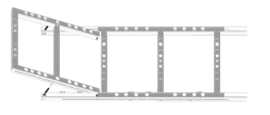
Figure 6: CAD drawing of Structural support subsystem
Key Design Features
- Internal Frame Structure: Combination of longitudinal and cross members forming a rigid load-bearing skeleton.
- Load Distribution: Frame geometry ensures even distribution of patient and handling loads.
- Standardized Fasteners: Use of ISO 4014 bolts paired with ISO 4033 nuts for secure and consistent connections.
- Modularity: Bolted connections allow for easier assembly, disassembly, and component replacement.
- Structural Integrity: Design minimizes deformation under operational loading conditions.
- Frame Geometry: Optimized layout to prevent excessive deflection during lifting and transport.
8.2.3 Material Choice & Justification
Table 9: Internal Structural Frame Material Choice
| Component | Material Selected | Key Properties | Justification |
|---|---|---|---|
| Internal Frame (Longitudinal and Cross Members) | Aluminium 6061-T6 |
Yield Strength = 240 MPa Elastic Modulus = 69 GPa Tensile Strength = 290 MPa Density = 2700 kg/m³ |
Optimal strength-to-weight ratio. Offers excellent weldability with good fatigue resistance. |
Table 10: Off the Shelf Components Material Selection
| Component | Specification | Function | Justification |
|---|---|---|---|
| Bolts (ISO 4014) |
ISO 4014 M10 × 65 |
Internal frame attachment to enclosure shell | High structural reliability, standardization and widespread commercial availability. |
| Nuts (ISO 4033) | ISO 4033 M10 | Internal frame attachment to enclosure shell | The M10 fasteners offer enough gripping power and shear capacity to firmly fix the fiberglass enclosure to the aluminium frame while preserving durability under dynamic loading and vibrations brought on by transport. |
8.2.3. Key Calculations
The structural frame was analysed under the worst-case carrying condition. This condition occurs when the evacuation pod is carried horizontally by the rescuers, causing the frame to behave as a simply supported beam between the handle locations.
Under this loading scenario, the largest bending moment occurs at the midpoint between the handles. This location therefore represents the critical section for evaluating bending stresses, structural stiffness, and overall load-carrying capability of the frame.
The structural analysis was performed using the maximum expected patient load, combined with the weight of the pod and an appropriate factor of safety to account for dynamic loading conditions encountered during transport across uneven terrain.
m = 90 kg, g = 9.81 m/s², L (distance between handles) = 0.8 m
W = mg = 90(9.81) = 882.9 N
Since the pod will be transported across uneven terrain during emergency evacuation, dynamic loading effects must be considered. A dynamic amplification factor of 2 was selected to account for walking motion, impacts, and load oscillations.
Fdynamic = 2W = 2(882.9) = 1765.8 N
To ensure adequate structural reliability under uncertain loading conditions, a safety factor of 2 was applied.
Fdesign = 2Fdynamic = 2(1765.8) = 3531.6 N
The structural frame is therefore designed for a worst-case vertical loading of:
Fdesign = 3531.6 N
Maximum Bending Moment
The frame between the handles was approximated as a simply supported beam with a central point load. This loading configuration produces the maximum bending moment at the centre of the span.
Mmax = FL 4 = (3531.6)(0.8) 4 = 706.32 N·m
Frame Cross-Section Geometry
The structural members consist of hollow square aluminium tubing manufactured from 6061-T6 aluminium alloy.
outer width = b = 0.04 m, wall thickness = t = 0.003 m
internal width = bi = b − 2t = 0.04 − 2(0.003) = 0.034 m
Second Moment of Area
The second moment of area determines the bending resistance and stiffness of the hollow square tube. The section modulus relating bending resistance of the member from the distance to the neutral axis is then determined.
I = b4 − bi4 12 = (0.04)4 − (0.034)4 12 ≈ 1.02 × 10−7 m4
y = b 2 = 0.04 2 = 0.02 m
Section Modulus = Z = I y = 1.02 × 10−7 0.02 = 5.10 × 10−6 m3
Maximum Bending Stress
The maximum bending stress in the member was calculated using the flexure formula:
σmax = M Z = 706.32 5.1 × 10−6 = 138.5 MPa
σy ≈ 240 MPa
(For Aluminium 6061-T6)
Material Verification: The safety factor against yielding is approximately 2.
The structural frame satisfies the strength requirements under worst-case transport loading conditions. The selected 40 mm hollow square 6061-T6 aluminium members with a wall thickness of 3 mm maintain stresses below the material yield strength while achieving a factor of safety of 2.
The frame is therefore considered structurally safe for emergency evacuation operations.
8.2.4. Manufacturing Processes
Table 11: Structural Frame Manufacturing Process
| Component | Material | Manufacturing Process | Process Description | Justification |
|---|---|---|---|---|
| Main Frame Longitudinal Rails (x2) | Aluminium 6061-T6 40 × 40 × 3 SHS | Extrusion | Hollow rectangular section profile (40×40 mm) is extruded to produce continuous tube stock. | Extrusion produces accurate, consistent hollow profiles in Al6061 with minimal material waste. |
| Main Frame Cross Members (x4) | Aluminium 6061-T6 40 × 40 × 3 SHS | Extrusion then cutting to length | Same hollow section stock is cut to 572 mm lengths using a cold saw or bandsaw. | Compared to individual shaping, cutting from extruded stock is quicker and less expensive. Clean square ends suitable for fastened connections are produced by cold sawing. |
| Back Support Frame Members | Aluminium 6061-T6 | Extrusion then cutting to length | Hollow section stock cut to 651 mm and 572 mm lengths. | Same rationale as main frame cross members. |
| All Frame Members — Bolt Hole Drilling | Aluminium 6061-T6 | Drilling | M6 clearance holes (6.5 mm diameter) drilled at connection points using a pillar drill with jig. | Drilling is the standard process for producing fastener holes in aluminium. A jig ensures hole alignment consistency across multiple identical members. |
| All Frame Members — Hole Deburring | Aluminium 6061-T6 | Deburring | Drilled hole edges chamfered using a hand deburring tool. | Removes sharp edges that would damage fastener threads and present an injury risk to rescuers handling the frame. |
| All Frame Members — Surface Treatment | Aluminium 6061-T6 | Anodising | Electrochemical anodising produces a hard aluminium oxide layer on all exposed surfaces. | Anodising improves corrosion resistance in the wildfire environment where moisture, ash, and retardant chemicals may contact the frame. |
| Frame Assembly | Aluminium 6061-T6 Frame + ISO M6 COTS Fasteners | Bolted Assembly | Members aligned using an assembly jig. M6 socket head cap screws torqued to 9–10 Nm with Loctite 243 thread-lock applied. | Bolted connections allow field disassembly if a member is damaged. Thread-lock prevents vibration loosening during helicopter transport. |
8.3. Environmental Protection Subsystem
8.3.1. Design Overview
The environmental protection subsystem is designed to provide a controlled and protected enclosure for the patient during evacuation. It serves to shield the patient from external environmental conditions such as dust, moisture, temperature variations, and physical impacts, while maintaining a safe and comfortable internal environment.
The subsystem consists of an insulated enclosure shell, outer casing panels, sealing interfaces, and a viewing window. These components work together to create a protective barrier that ensures environmental isolation, structural integrity, and visibility for monitoring the patient.
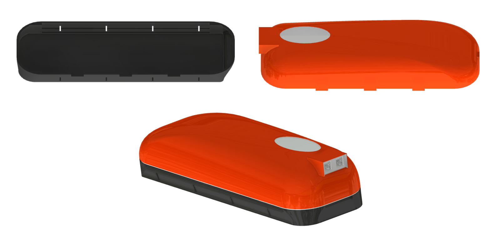
Figure 7: CAD drawing of environmental protection subsystem
Key Design Features
- Insulated Panels: Provide thermal insulation to maintain a stable internal temperature and protect the patient from external environmental conditions.
- Outer Casing: Rigid external shell that protects the internal components from impacts, debris, and mechanical damage.
- Joints: Designed to prevent the ingress of dust, water, and contaminants, ensuring airtight or watertight integrity where required.
- Viewing Window: Transparent panel allowing external monitoring of the patient without compromising the protective enclosure.
- Insulated Enclosure Shell: Integrated structural shell combining insulation and mechanical protection to form the primary environmental barrier.
- Cover: Removable or openable top section that allows easy access to the patient while ensuring secure closure during operation.
8.3.2. Material Choice & Justification
Table 12: Environmental Protection Material Choice and Justification
| Component | Material Selection | Function | Justification |
|---|---|---|---|
| Insulated Enclosure Shell | Fiberglass reinforced polymer (FRP) with polyurethane foam core. | Shields patient from external heat and reduces smoke and ash penetration. | FRP has a high strength-to-weight ratio, low thermal conductivity, and excellent manufacturability, making it well suited to wildfire evacuation environments. |
| Protective Cover | Fiberglass reinforced polymer (FRP) with polyurethane foam core. | Provides thermal insulation, environmental protection from ash, and structural enclosure around the patient compartment. | The polyurethane foam core improves thermal insulation and reduces heat transfer into the pod during wildfire exposure, while FRP provides high strength-to-weight ratio, corrosion resistance, and superior impact resistance. |
| Viewing Window on Cover | Polycarbonate | Allows visual monitoring of the patient while maintaining enclosure protection. | Polycarbonate was selected for wildfire and emergency transport applications due to its toughness, low mass, optical transparency, and high impact resistance compared to traditional glass. |
Table 13: Off the Shelf Components Material Selection
| Component | Specification | Function | Justification |
|---|---|---|---|
| HEPA-filtered passive ventilation vents | Dual HEPA-filtered passive ventilation vents | Allows natural airflow circulation while filtering smoke, ash, and airborne particulates from incoming air. | Eliminates the need for powered ventilation systems while maintaining breathable airflow and environmental protection. |
8.3.3. Key Calculations
Wildfire Thermal Conditions
Tout = 60°C, Tin = 35°C, ΔT = Tout − Tin = 60 − 35 = 25°C
Pod External Surface Area
L = 2.2 m, W = 0.8 m, H = 0.4 m
A = 2(LW + LH + WH)
= 2[(2.2)(0.8) + (2.2)(0.4) + (0.8)(0.4)]
= 5.92 m²
Heat Conduction Through Fiberglass Shell
Using Fourier’s Law:
k(FRP) = 0.04 W/mK
k(polyurethane foam core) = 0.03 W/mK
FRP thickness = 0.0015 m
Core thickness = 0.014 m
Rfrp = 0.0015 / 0.04 = 0.0375 m²K/W
2Rfrp = 0.075
Rcore = 0.014 / 0.03 = 0.467
Rtotal = 0.075 + 0.467 = 0.542 m²K/W
q = AΔT / Rtotal
= (5.92)(25) / 0.542 ≈ 273 W
The low thermal conductivity of the fiberglass and foam core significantly reduces heat transfer into the pod compared to metallic structures.
Internal Pod Volume
V = LWH
= (2.2)(0.8)(0.4)
= 0.704 m³
Internal Air Mass
ρ = 1.225 kg/m³
m = ρV
= (1.225)(0.704)
≈ 0.862 kg
Evacuation Exposure Duration
d = 500 m
Assumed carrying speed: v = 1.0 m/s
Walking duration: t = d/v
= 500 / 1.0
= 500 s
Including patient loading time (60 seconds maximum):
ttotal = 500 + 60 = 560 s = 9.33 min
The pod only needs to maintain survivable conditions for approximately 9–10 minutes.
Total Thermal Energy Entering the Pod During Evacuation
Q = qt
= (273)(560)
= 152880 J
This represents an upper-bound transient energy accumulation estimate assuming no ventilation cooling.
Specific heat capacity of air:
c = 1005 J/kg·K
ΔT = Q / mc
= 152880 / ((0.862)(1005))
≈ 176°C
This result represents an intentionally conservative worst-case estimate bracuse:
No ventilation cooling was assumed, constant peak wildfire exposure was assumed, no shell heat absorption was considered, and no convection losses were considered. The actual internal temperatures will therefore be significantly lower.
Q = 131 3600 = 0.0364 m³/s
Qreal = 0.5Q = 0.0182 m³/s
Electrical power consumption, supplied by a lithium-ion battery pack:
P(each fan) = 4 W, Ptotal = 8 W
E = Pt = (8)(560) = 4480 J
8.3.4. Manufacturing Processes
Table 14: Environmental Protection Manufacturing Processes
| Component | Material | Manufacturing Process | Process Description | Justification |
|---|---|---|---|---|
| Top cover outer FRP skin | 2200 × 800 mm plan area, 1.5 mm thickness. Fiberglass reinforced polymer. | Hand lay-up moulding | Fibreglass woven fabric plies wet-laid with epoxy resin into a female mould. Cured at room temperature under vacuum bagging pressure for 24 hours. | Hand lay-up is cost-effective for low-volume production of large curved panels. Vacuum bagging ensures consistent resin-to-fibre ratio. |
| Top cover PU foam core | Closed-cell polyurethane foam (density 40 kg/m³), 20 mm thickness | Foam-in-place casting | Two-part polyurethane foam system poured into the cavity between outer and inner skins. Expands to fill geometry and bonds to both FRP surfaces. Trimmed flush at edges after curing. | Foam-in-place eliminates adhesive bonding steps and ensures full contact between foam and FRP skins with no delamination risk. Closed-cell structure prevents moisture absorption in the wildfire environment. |
| Top cover-inner FRP skin | Fibreglass reinforced polymer (FRP) | Hand lay-up moulding | Single-ply fibreglass fabric wet-laid with epoxy resin over foam core inner surface. Cured at room temperature. | Inner skin provides a hard, smooth, cleanable patient contact surface. |
| Bottom shell, sandwich panel (outer skin + foam core + inner skin) | 2200 × 800 mm plan area, 160 mm shell height. Outer: 1.5 mm FRP. Core: 20 mm PU foam. Inner: 0.5 mm FRP. Top width = 800 mm, lower width = 700 mm. | Hand lay-up moulding + foam-in-place casting | Identical sandwich construction process to top cover. Outer FRP skin moulded first, foam cast in place, inner skin laid up over foam. | Same process as top cover ensures consistent material properties and manufacturing quality across both shells. A tapered geometry improves ergonomics and reduces footprint during ground transport. |
| Transparent Polycarbonate viewing window |
Major axis: 350 mm Minor axis: 180 mm (oval) Thickness: 10 mm Polycarbonate |
CNC machining + edge polishing | Oval profile CNC-machined from 10 mm PC flat sheet stock. Edges machine-polished to optical clarity. Aperture cut in top cover FRP shell using router jig. Window bonded into aperture with structural silicone adhesive and mechanically retained with FRP lip. | Polycarbonate selected for impact resistance (250× stronger than glass), optical clarity for patient monitoring, and accurate oval profile for airtight seal interface. |
| Passive HEPA ventilation vents (×2) |
Filter face: 150 × 150 mm per vent Aluminium frame Filter grade: H13 HEPA Mass: 0.4 kg per unit Dual HEPA-filtered passive ventilation vent |
Aperture cutting + mechanical mounting | Rectangular apertures cut in top cover FRP shell at head-end and foot-end locations using router jig. Vent assemblies mechanically fastened to shell using M4 countersunk screws into aluminium inserts bonded into the FRP. Sealed at perimeter with silicone sealant. | H13 HEPA filtration removes 99.95% of particles, covering wildfire ash and smoke particulates. Natural convection drives airflow, providing patient respiratory air supply without thermal management dependency. |
| Environmental protection subsystem assembly |
Closed pod overall: 2200 × 800 × 400 mm Wall thickness: 22 mm FRP sandwich shells + PC window + EPDM seal + COTS passive vents |
Structural adhesive bonding + mechanical fastening | Top cover and bottom shell aligned using locating pins. Hinge system (ZHJ06-92 COTS) installed at head-end. EPDM seal compressed 3 mm under latching force when pod is closed. | Locating pins ensure repeatable alignment of mating faces for consistent seal compression. |
8.4. Patient Support Platform Subsystem
8.4.1. Design Overview
The patient support platform subsystem is designed to provide a stable, secure, and ergonomically suitable interface between the patient and the evacuation pod structure. It ensures proper weight distribution, patient immobilization, and posture control during transport, reducing the risk of injury under both static and dynamic conditions.
The subsystem integrates a rigid bed platform supported by an internal frame, a backrest mechanism for adjustable positioning, and restraining straps for patient safety. These components function together to maintain patient stability, enhance comfort, and ensure safe handling throughout evacuation procedures.
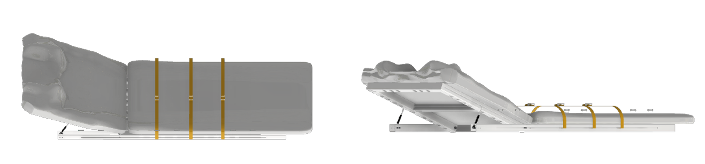
Figure 8: Patient support platform subsystem.
Key Design Features
- Bed (Support Platform): A rigid, load-bearing surface designed to support the full body weight of the patient while distributing pressure evenly.
- Restraining Straps: Adjustable securing system used to immobilize the patient and prevent movement during lifting, transport, and emergency handling.
- Backrest Mechanism: Adjustable component allowing elevation of the upper body to improve comfort, breathing, and medical accessibility.
8.4.2. Material Choice & Justification
Table 15: Patient Support Platform Material Choice and Justification (off the shelf components)
| Component | Key Properties | Function | Justification |
|---|---|---|---|
| Bed (EVA closed-cell foam layer) | Lightweight with high strength-to-weight ratio and shock absorption | Provides a stable, cushioned, and load-distributing surface that supports the patient's body during transport and distributes body weight evenly to avoid pressure points. | To offer cushioning, absorb vibration, and lessen pressure points on the patient's body, a layer of closed-cell foam is positioned atop the base. When evacuating over uneven terrain, this increases comfort and reduces the possibility of subsequent injuries. |
| Restraining Straps (nylon webbing straps with buckles) | High tensile strength, heat resistant and adjustable length | To secure and stabilise the patient inside the pod during transport. | While flexibility enables a secure fit for a variety of body sizes, high-strength webbing guarantees the patient's stability under dynamic loading circumstances. |
| Gas strut-assisted adjustable aluminium backrest with locking hinge | Smooth adjustable motion (gas strut assisted), locking capability at multiple angles, durable under repeated use and vibration. | Provides controlled support and smooth adjustment of the backrest mechanism. | Uses a gas strut to allow controlled adjustments of the patient’s upper body position. In an emergency, the gas strut makes adjustment safer and more effective by lowering the amount of human force needed by rescuers. |
8.4.3. Key Calculations
The subsystem must safely support a maximum patient load of:
W = mg = 90 × 9.81 = 882.9 N
Load Distribution Between Torso and Lower Body: Human body mass distribution was approximated as Torso head/arms: 60%, Lower body: 40%.
Torso Load = Ft = 0.6F = 0.6(883) = 529.8 N ≈ 530 N
Lower Body Load = Fl = 0.4F = 0.4(883) = 353.2 N ≈ 353 N
L = 1.32 m
w = F/L
= 353 / 1.32 = 267.4 N/m
L = 0.65 m
w (Torso bed section) = 530 / 0.65 = 815.4 N/m ≈ 815 N/m
Maximum Bending Moment in support Panels: The support panels were approximated as simply supported beams subjected to uniformly distributed loading.
Mmax = wL² / 8
= (815)(0.65)² / 8
= (815)(0.4225) / 8
= 344.34 / 8
= 43.04 Nm ≈ 43 Nm
θ = 20°
r = 0.65 / 2 = 0.325 m
M = Fr sinθ
= (530)(0.325) sin(20°)
= (172.25)(0.342)
= 58.91 Nm ≈ 59 Nm
8.4.4. Manufacturing Processes
Table 16: Patient Support Platform Manufacturing Processes
| Component | Material | Manufacturing Process | Process Description | Justification |
|---|---|---|---|---|
| Lower bed EVA foam panel |
1320 × 572 × 5 mm (rectangular) EVA closed-cell foam (COTS sheet stock) |
Cutting to size | EVA foam sheet stock cut to 1320 × 572 mm using a sharp utility knife and straight edge with edges trimmed square. | Cutting from sheet stock eliminates tooling costs and the rectangular profile matches lower frame internal dimensions exactly. |
| Upper bed (torso section) EVA foam panel |
651 × 572 × 5 mm (rectangular) EVA closed-cell foam (COTS sheet stock) |
Cutting to size | EVA foam sheet stock cut to 651 × 572 mm using a sharp utility knife and straight edge with edges trimmed square. | Separate upper section allows foam to move with the backrest during inclination adjustment without creating pressure points. |
| Strap anchor holes in frame longitudinal rails (×4) | 10 mm diameter holes (×4) located in longitudinal frame rails | Drilling + deburring | 10 mm holes drilled through walls of both longitudinal frame rails at anchor point locations using a pillar drill with jig. Holes deburred with hand tool. | Pillar drill and jig ensure hole perpendicularity and position accuracy. Deburring prevents stress concentration and thread damage. |
| Restraining straps (×4) |
50 mm wide × 2 mm thick 1000 mm length per strap EN 1492-1 compliant nylon webbing with steel buckles (COTS) |
COTS, no manufacturing required | Standard EN 1492-1 rated 50 mm nylon rescue webbing sourced from rescue equipment supplier with steel quick-release buckles. | Nylon selected for high tensile strength, heat resistance to 60°C ambient and adjustable length accommodating patient sizes from child to adult. |
| Gas struts for torso inclination (×2) |
Stroke: 30 mm Diameter: 12 mm Gas strut assembly (COTS) |
COTS, no manufacturing required | Standard gas strut assemblies sourced from supplier and mounted between backrest frame and main frame. Locking mechanism integrated in strut allows position to be held between 0° and 20°. | Gas strut selected to provide smooth controlled backrest adjustment requiring minimal rescuer force. |
8.5. Handling & Load Interface Subsystem
8.5.1. Design Overview
The handling and load interface subsystem is designed to facilitate safe, efficient, and ergonomic interaction between the evacuation pod and external operators or supporting systems. It ensures that the pod can be securely lifted, carried, and mounted while maintaining structural integrity and user safety.
This subsystem integrates fixed side handles for manual handling, mounting brackets for interfacing with external transport or support systems, and reinforcement features to strengthen high-load regions. Together, these components provide reliable load transfer paths and enhance the durability of the pod during repeated handling operations.
Figure 9: Handling subsystem
Key Design Features
- Fixed Side Handles: Strategically positioned handles that allow operators to lift and carry the pod safely, ensuring proper load distribution and ergonomic handling.
- Mounting Brackets: Interface components designed to securely attach the pod to external systems such as transport platforms, stretchers, or mounting frames.
8.5.2. Material Choice & Justification
Table 17: Handling & Load Interface Material Choice and Justification
| Component | Material Selection | Key Properties | Justification |
|---|---|---|---|
| Side Handles (×4) | Aluminium 6061-T6 |
Yield Strength = 240 MPa Elastic Modulus = 70 GPa |
Provides high strength-to-weight ratio with ease of fabrication and good fatigue performance which is essential to counteract the repeated cyclic loading and dynamic carrying forces. |
Table 18: Off the Shelf Components
| Component | Specification | Function | Justification |
|---|---|---|---|
| Retroreflective tape | High temperature retroreflective tape | To enhance visual identification of pod handles in smoky environment. | It maintains reflective performance under elevated temperatures. |
| Grip cover | Silicone rubber sleeve | Thermally insulating ergonomic and non-slip interface between rescuers and handle. | It reduces heat transfer from the aluminium handle to the rescuer's hands and provides grip friction. |
8.5.3. Key Calculations
Important assumptions: equal load sharing among handles.
mp = 90 kg
Fp = mg
= (90)(9.81)
= 882.9 N ≈ 883 N
The self-weight of the evacuation pod is included as a dead load acting concurrently with the patient load during transport conditions:
mpod = 38.6 kg
Fpod = (38.6)(9.81)
= 378.67 N
Ftotal load
= 883 + 378.67
= 1261.67 N
Fhandle = Ftotal / 4
= 1261.67 / 4
= 318.75 N ≈ 315.4 N
m (per rescuer)
= 315 / 9.81
= 32.1 kg
Dynamic load factor = 1.5
Fd = 1.5(1261.67)
= 1892.5 N
Fd(r) = 1892.5 / 4
= 478.25 N ≈ 473 N
L = 0.1065 m
M (max bending) = FL
= (473)(0.1065)
= 50.3745 Nm
D = 0.03 m
t = 0.003 m
d = D − 2t = 0.024 m
I = (π/64)(0.03⁴ − 0.024⁴)
I = 2.31 × 10⁻⁸ m⁴
c = 0.015 m
σ = Mc/I
= (50.91)(0.015)/(2.31 × 10⁻⁸)
≈ 33 MPa
σy = 276 MPa
FoS = 276/33
= 8.36 ≈ 8.4
σmax = 33 MPa
σmin = 8 MPa
σa = (33 − 8)/2
= 12.5 MPa
σm = (33 + 8)/2
= 20.5 MPa
σf ≈ 96 MPa
FoSf = 96/12.5
= 7.68 ≈ 7.7
8.5.4. Manufacturing Processes
Table 19: Handling & Load Interface Manufacturing Processes
| Component | Material | Manufacturing Process | Process Description | Justification |
|---|---|---|---|---|
| Handle mounting brackets (×4). Plate with rope aperture sized for 50 mm rope diameter. M6 bolt pattern. | Aluminium 6061-T6 | CNC Milling + deburring + drilling + anodising | Bracket geometry machined from Aluminium 6061-T6 flat stock using CNC milling. Handle connection and mounting holes drilled. Edges deburred and anodised after machining. | Anodising consistent with frame treatment ensures uniform corrosion resistance across the whole pod. CNC milling provides accurate hole positioning and dimensional consistency. |
| Handles (×4) | Aluminium 6061-T6 | Cutting to length + bending + drilling + deburring + anodising | Aluminium tube cut to required handle length. Tube bent to ergonomic profile and mounting holes drilled at connection points. Edges deburred before anodising. | Anodising improves corrosion resistance and surface durability under outdoor wildfire conditions. |
9. Solution Datasheet
The purpose of this datasheet is to provide essential information to the rescue crew for the safe and effective use of the evacuation pod during evacuation procedures, and for maintenance of parts.
9.1. Features of the Solution
Lightweight Internal Structural Frame
The pod utilizes an internal load-bearing frame constructed from Aluminium 6061-T6 hollow square sections arranged in a reinforced longitudinal and cross-member configuration. The frame provides high stiffness and reliable load transfer while maintaining a low overall system mass below 40 kg. All major structural joints utilize standardized ISO fasteners, allowing damaged members to be removed and replaced using basic hand tools without requiring specialized equipment. The modular bolted architecture also simplifies maintenance and subsystem replacement after field deployment.
Integrated Thermal and Environmental Protection System
The enclosure system consists of a Fiberglass Reinforced Polymer (FRP) shell combined with a polyurethane foam insulation core. This insulated shell configuration provides protection against wildfire heat exposure, airborne ash, smoke particles, and environmental contaminants while maintaining a lightweight structure. The enclosure acts as a sealed environmental barrier using silicone compression seals positioned along the mating surfaces between the top cover and lower container. A transparent polycarbonate viewing window allows rescuers to continuously monitor the patient without opening the enclosure and compromising internal conditions.
Ergonomic Patient Support and Positioning System
The patient support platform incorporates EVA closed-cell foam cushioning mounted on a rigid frame-supported bed structure to evenly distribute patient loads and reduce pressure concentrations during transport across uneven terrain. The torso support section integrates a gas strut-assisted adjustable backrest mechanism capable of controlled inclination between 0° and 20°. This improves patient comfort, breathing posture, and medical accessibility during evacuation while minimizing the physical effort required from rescuers during adjustment. Adjustable nylon restraining straps securely stabilize the patient during lifting and transport operations.
Safe and Efficient Manual Handling System
The evacuation pod integrates four fixed aluminium side handles directly connected to reinforced frame nodes to ensure safe and balanced manual carrying. The handle geometry and placement distribute the carrying load evenly among rescuers while reducing torsional loading on the frame. Silicone grip sleeves thermally isolate the handles from external heat while improving grip friction under dusty or wet conditions. High-temperature retroreflective tape improves visibility of the lifting interfaces in smoke-filled environments and low-visibility emergency conditions.
Structural Reliability Under Dynamic Loading
The pod structure was designed to withstand dynamic loading conditions encountered during emergency evacuation over rough terrain. The frame was analysed under worst-case carrying conditions using dynamic amplification and safety factors to account for walking impacts, oscillations, and uneven terrain loading. The Aluminium 6061-T6 structural members maintain stresses below material yield limits while providing a structural factor of safety greater than 2 under maximum design loading conditions. The integrated load path architecture ensures that patient loads, carrying loads, and enclosure loads are distributed efficiently throughout the structure without overstressing individual components.
Modular and Maintainable System Architecture
The overall system architecture separates the pod into integrated but modular subsystems including:
- Structural Support Subsystem
- Environmental Protection Subsystem
- Patient Support Platform Subsystem
- Handling & Load Interface Subsystem
This modular approach improves manufacturability, inspection accessibility, repairability, and future subsystem upgrades without requiring redesign of the entire evacuation pod.
9.2. Technical Specifications
Table 20: Pod Technical Specifications
| Category | Specification | Value |
|---|---|---|
| Performance | Maximum Patient Mass | 90 kg |
| Pod Mass | 38.6 kg | |
| Maximum Design Load | 3531.6 N | |
| Maximum Bending Stress (Frame) | 138 MPa | |
| Maximum Handle Stress | 33 MPa | |
| Handle Fatigue Factor of Safety | 7.7 | |
| Estimated Evacuation Duration | 9–10 min | |
| Dimensions | Overall Pod Length | 2200 mm |
| Overall Pod Width | 800 mm | |
| Overall Pod Height | 400 mm | |
| Bottom Shell Width (Lower Section) | 700 mm | |
| Bottom Shell Height | 160 mm | |
| Top Cover Height | 240 mm | |
| Viewing Window Dimensions | 350 (Major axis) × 180 mm (Minor axis) | |
| Handle Length | 300 mm | |
| Frame Cross Section | 40 × 40 mm SHS | |
| Thermal & Environmental Protection | External Temperature Exposure | Up to 60°C |
| Internal Target Temperature | ≤ 35°C | |
| Thermal Insulation System | FRP + Polyurethane Foam Core | |
| Shell Thickness (Base) | 22 mm | |
| Shell Thickness (Top Cover) | 17 mm | |
| Viewing Window Material | Polycarbonate | |
| Seal Compression Range | 20–30% | |
| Ventilation System | Ventilation Method | Filtered active airflow |
| Fan Type | Axial PWM micro fans | |
| Number of Fans | 2 (inlet) | |
| Fan Diameter | 120 mm | |
| Filter Type | HEPA filtration | |
| Patient Support System | Backrest Inclination Range | 0°–20° |
| Backrest Adjustment Mechanism | Gas strut assisted | |
| Bed Cushion Material | EVA closed-cell foam | |
| Restraining System | Adjustable nylon straps | |
| Handling & Structural System | Primary Structural Material | Aluminium 6061-T6 with holes |
| Structural Member Configuration | Hollow Square Section | |
| Handle Material | Aluminium 6061-T6 | |
| Fastener Standard | ISO 4014 / ISO 4033 | |
| Frame Connection Method | Bolted assembly | |
| Durability & Maintenance | Corrosion Protection Method | Anodizing |
| Replaceable Structural Members | Yes | |
| Maintenance Method | Basic hand-tool disassembly |
References
- Z. A. Mani, Amir Khorram-Manesh, and Krzysztof Goniewicz, “Global Health Impacts of Wildfire Disasters From 2000 to 2023: A Comprehensive Analysis of Mortality and Injuries,” Disaster Medicine and Public Health Preparedness, vol. 18, Jan. 2024, doi: https://doi.org/10.1017/dmp.2024.150 .
- C. Niu, D. J. Nair, T. Zhang, V. Dixit, and P. Murray-Tuite, “Are wildfire fatalities related to road network characteristics? A preliminary analysis of global wildfire cases,” International Journal of Disaster Risk Reduction, vol. 80, p. 103217, Oct. 2022, doi: https://doi.org/10.1016/j.ijdrr.2022.103217 .
- A. Cardil and D. M. Molina, “Factors Causing Victims of Wildland Fires in Spain (1980–2010),” Human and Ecological Risk Assessment: An International Journal, vol. 21, no. 1, pp. 67–80, Jul. 2014, doi: https://doi.org/10.1080/10807039.2013.871995 .
- M. Diakakis, G. Xanthopoulos, and L. Gregos, “Analysis of forest fire fatalities in Greece: 1977–2013,” International Journal of Wildland Fire, vol. 25, no. 7, pp. 797–809, Jul. 2016, doi: https://doi.org/10.1071/WF15198 .
- R. Skinner et al., “A Literature Review on the Impact of Wildfires on Emergency Departments: Enhancing Disaster Preparedness,” Prehospital and Disaster Medicine, vol. 37, no. 5, pp. 657–664, 2022, doi:10.1017/S1049023X22001054.
- J. M. Morgan and P. Calleja, “Emergency trauma care in rural and remote settings: Challenges and patient outcomes,” International Emergency Nursing, vol. 51, no. 100880, p. 100880, Jul. 2020, doi: https://doi.org/10.1016/j.ienj.2020.100880 .
- C. K. Grissom, F. Thomas, and B. James, “Medical helicopters in wilderness search and rescue operations,” Air Medical Journal, vol. 25, no. 1, pp. 18–25, Jan. 2006, doi: https://doi.org/10.1016/j.amj.2005.10.002 .
- Adventure Medics (2026) Wildland Fire Medical Support. Available at: https://adventuremedics.com/wildland-fire-medical-support/ (Accessed: 14 May 2026).
- Evac+Chair, “ResQPod - Medical Emergency Evacuation Pod.” Available at: https://www.evac-chair.com/blog/resqpod/ (Accessed: 17 May 2026).
- Medicare, “S-CAPEPOD Evacuation Sheet Standard Model.” Available at: https://www.medicare.co.za/product/s-capepod-standard-evacuation-sheet/ (Accessed: 17 May 2026).
- EpiGuard, “EpiShuttle.” Available at: https://epiguard.com/epishuttle/ (Accessed: 17 May 2026).
10. Engineering Drawings
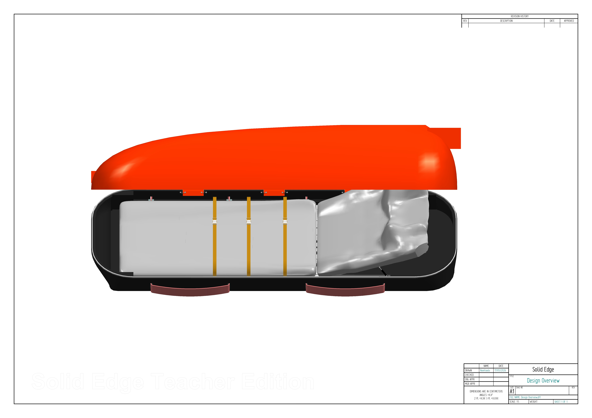
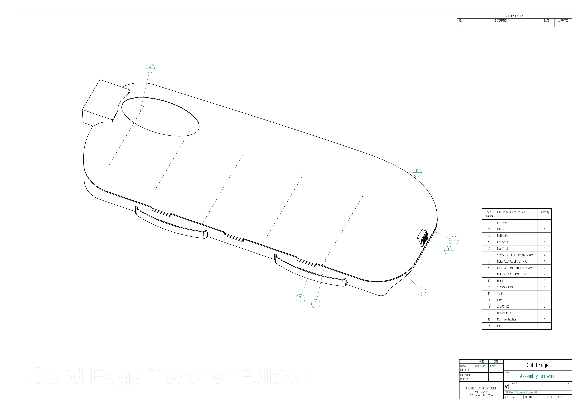
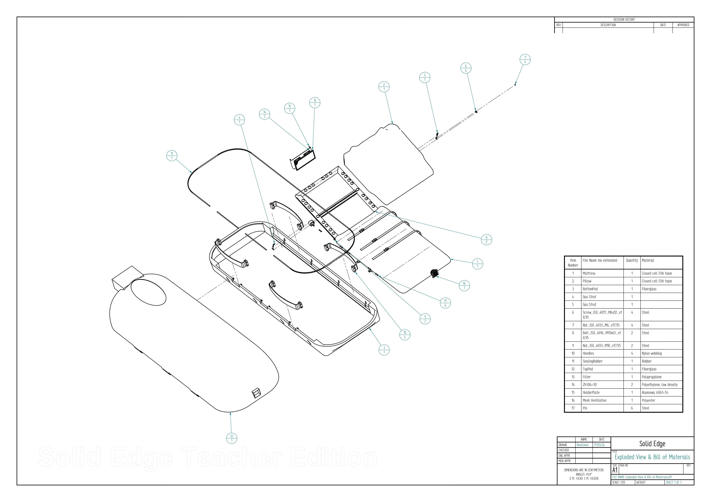
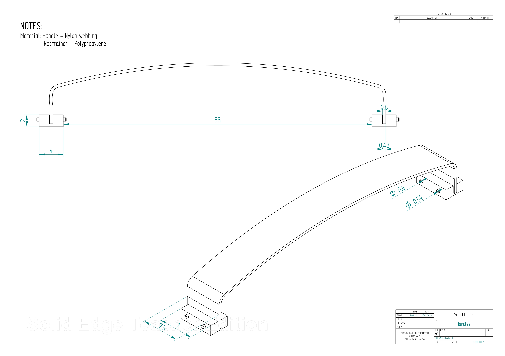
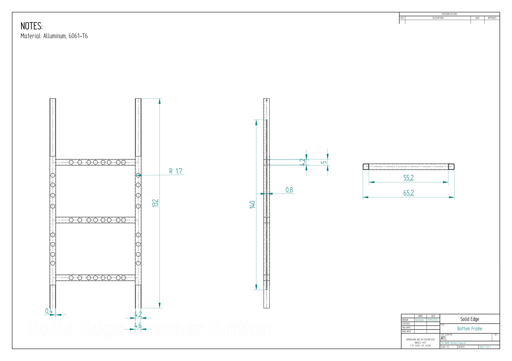
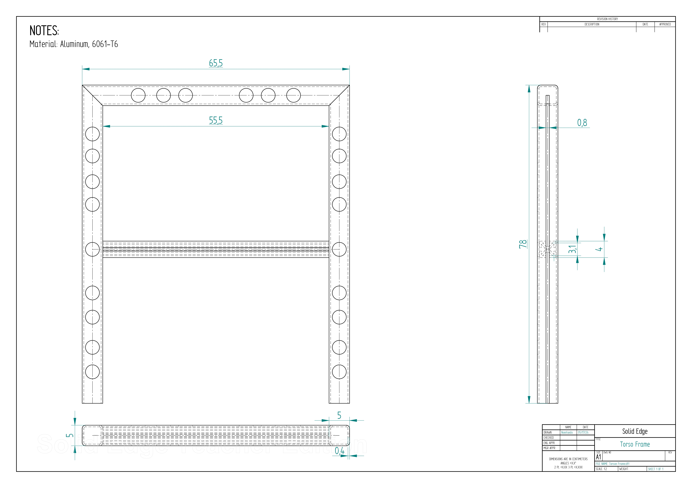
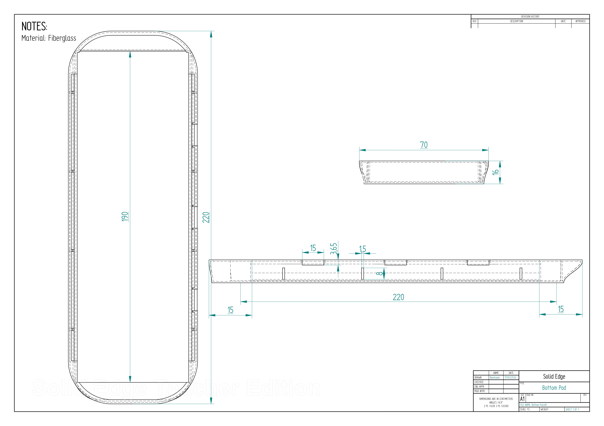
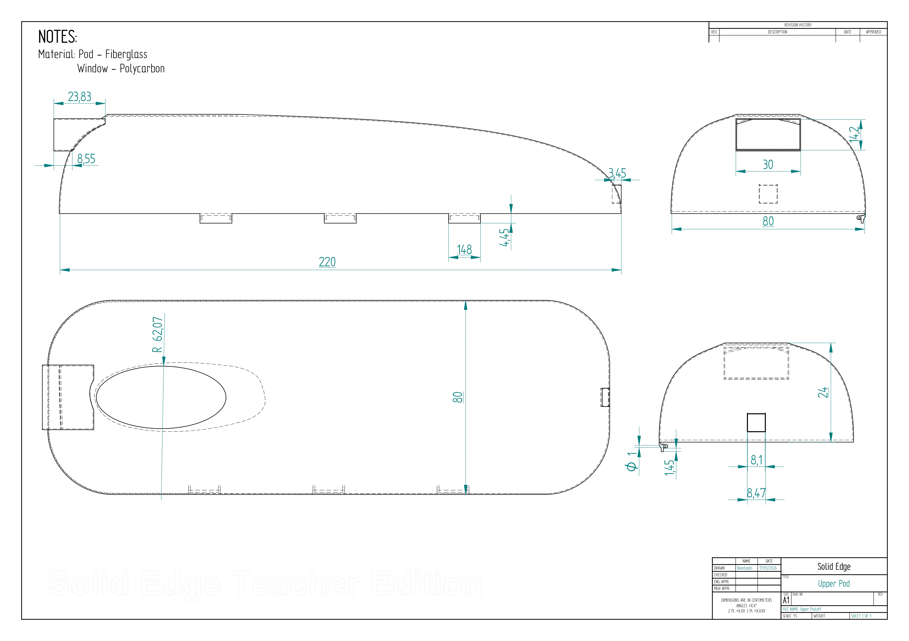